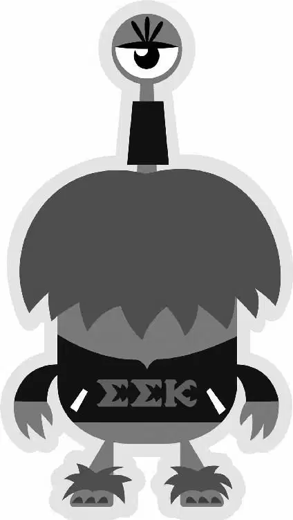

Mike desperately chased the pig as it bolted through campus. When he finally got close enough, he made a flying leap onto Archie’s back and grabbed the Fear Tech blanket that was strapped around the critter’s body.
“Yeah!” Sulley cheered, watching Mike bounce up and down on Archie’s back. “Ride it to Frat Row!”
Mike winced as Archie barely missed a guitar-playing student, who was crooning a ballad to several girls. Then Sulley crashed through the little group and sent them all sprawling. Laughing, he raced after Archie and Mike, who were heading toward the party lights of Frat Row.
Still at top speed, Mike rode Archie through several fraternity parties of dancing monsters. Sulley grabbed a piece of pizza off a Ping-Pong table in one house as he passed by. “Yeah!” he cheered again as they all raced out the back door.
Mike suddenly saw his roommate, Randy. “Cupcake?” Randy asked. Mike couldn’t stop Archie from smashing into Randy. His cupcakes sailed into the air and splatted down on his head, one by one, spelling out LAME.
Mike and Archie veered around a corner and made a direct hit into a husky monster playing football outside. The impact left Mike gasping on the ground while Archie continued running. Sulley leaped over Mike, chasing the scare pig.
But Archie still had Mike’s hat. Desperate, Mike looked around and noticed a trash can at the end of a row of bikes. Archie was running right by them.
Mike stood up, grabbed the husky monster’s football, and timed his throw perfectly. It hit the first bike and the rest fell like dominoes, knocking the trash can right into Archie’s path. Unable to stop himself, Archie ran into the can. Mike dashed over, picked up the squealing creature, and grabbed his MU hat. “Ha-ha!” he yelled triumphantly.
Just then, Sulley grabbed them both and hoisted them into the air like a trophy. “Fear Tech’s mascot! MU rules!” he shouted to the partying students.
As the crowd cheered, someone slapped an MU sticker over Archie’s Fear Tech blanket. Mike was beginning to feel like a hero as the crowd chanted, “MU! MU! MU!”
Several fraternity brothers headed toward him. “Did you see him catch that pig? You are Jaws Theta Chi material, freshman!”
Mike was so f lattered. “Well, thanks, I didn’t know the —” he started to say, but the fraternity boys walked right past him and over to Sulley.
“No, no,” another fraternity boy said, patting Sulley on the back. “He’s an Omega Howl guy.”
Mike was feeling pretty annoyed, when a voice suddenly called out, “I’ll take it from here, gentlemen!” Everyone turned to see a huge monster with large horns and terrifying fangs step forward from the crowd. He wore a jacket with the letters “ROR” on it.
The horned monster lumbered up to Sulley. “Johnny Worthington,” he said, introducing himself, “president of Roar Omega Roar. What’s your name, Big Blue?”
“Jimmy Sullivan. Friends call me Sulley.”
“Whoa! This guy’s a Sullivan!” exclaimed Chet, another ROR member.
“Chet, calm down,” Johnny said. Then he turned to Sulley. “Any freshman with the guts to pull off a stunt like that has got ‘Future Scarer’ written all over him.”
Sulley nodded smugly. Johnny and the RORs quickly swept Sulley into their fraternity house while Mike trailed along behind. “Did you see me ride the pig? That took guts!” he called after them.
Chet turned and stopped Mike at the door. “Slow down, squirt. This party’s for scare students only.”
Johnny leaned down to Mike’s level. “Sorry, killer, but you might want to hang out with someone a little more your speed. You know, like those guys.” Johnny pointed to a presentation that another fraternity had set up nearby. A group of awkward-looking monsters surrounded a table, which was decorated with kiddie balloons and cake. The sign said OOZMA KAPPA.
Mike looked at them, horrified. One of them yelled, “Oh, hey dere! Wanna join Oozma Kappa? We have cake!”
Mike stared at Johnny in disbelief. “Is that a joke?” he asked.
Johnny sighed with annoyance. “Sulley, talk to your friend,” he said.
“Well,” Sulley replied, “he’s not really my friend, but sure.” He turned to Mike. “You heard him; this is a party for scare students.”
Mike was exasperated. “I am a scare student!”
Sulley shrugged. “I mean, for scare students who actually, you know, have a chance.” The remark cut Mike to the core. His eye narrowed angrily as the RORs laughed.
“My chances are as good as yours!” Mike f ired back. “You just wait, hotshot! I’m gonna scare circles around you this year.”
“Okay,” Sulley said, laughing as he headed into the ROR house with his new friends. “I’d like to see that.”
“Oh, don’t worry,” Mike said as he put on his MU hat and walked away. “You will.”
